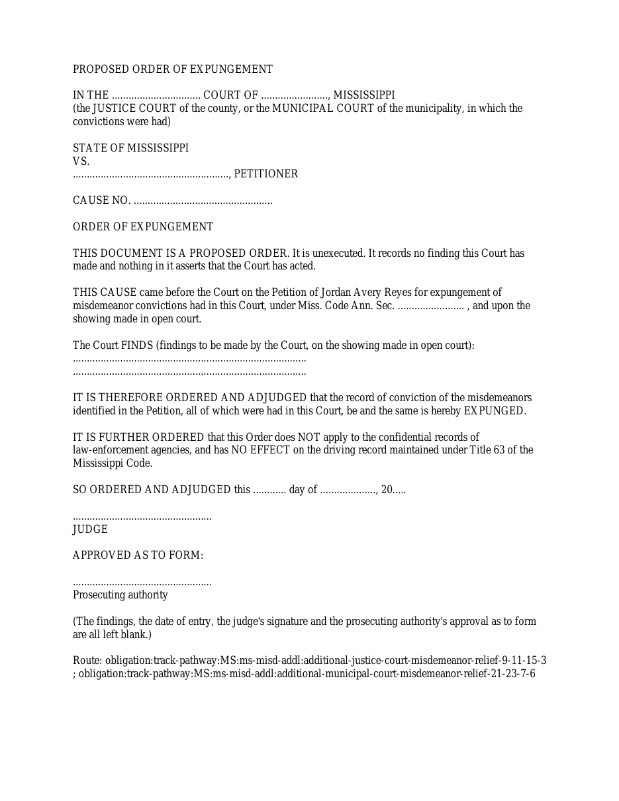
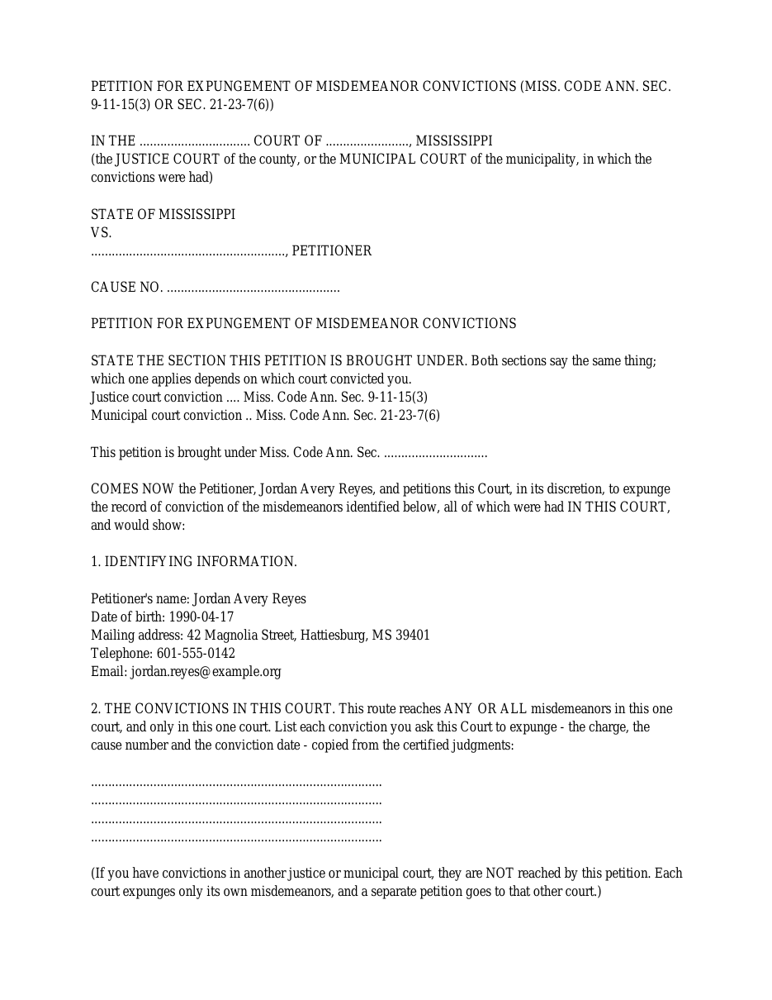
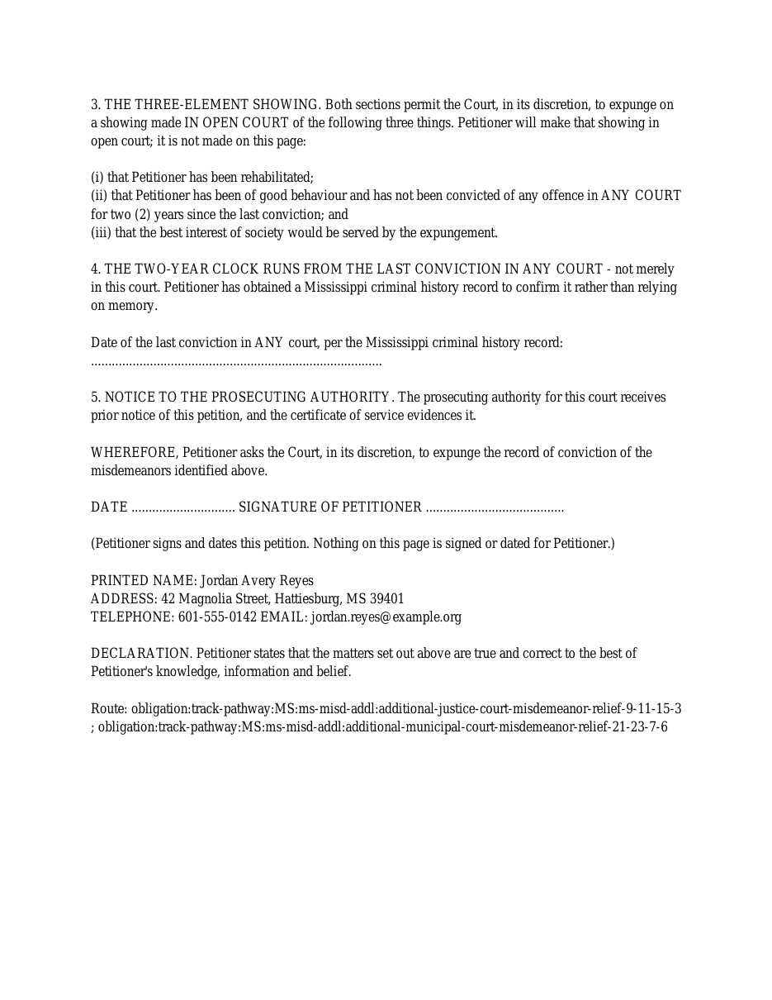
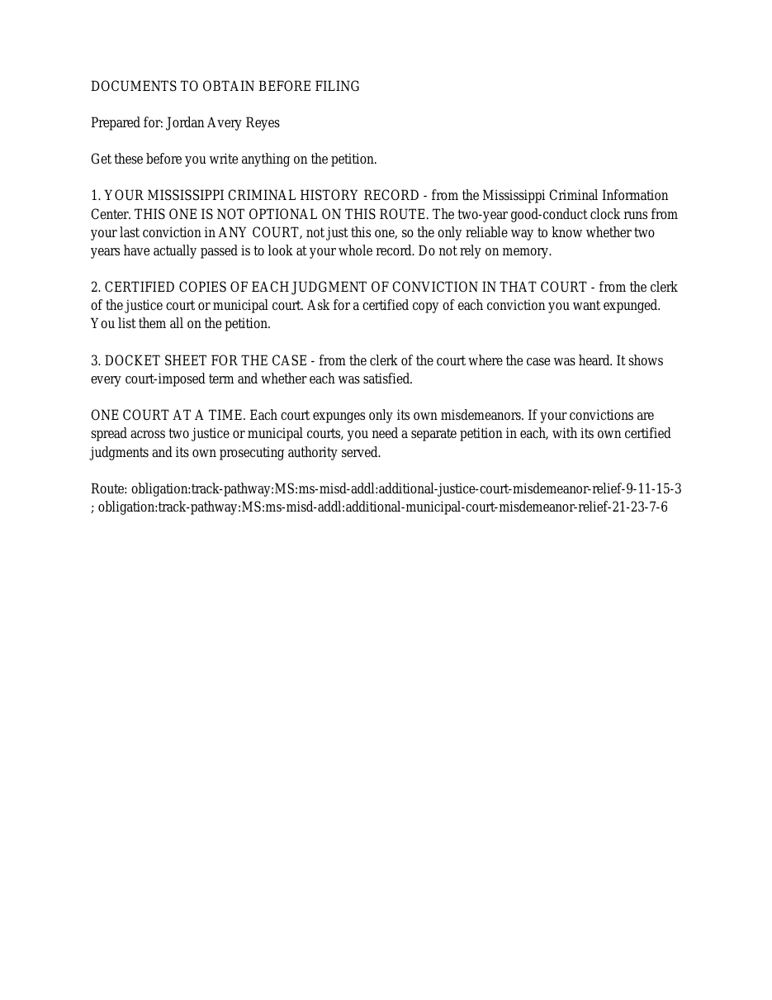
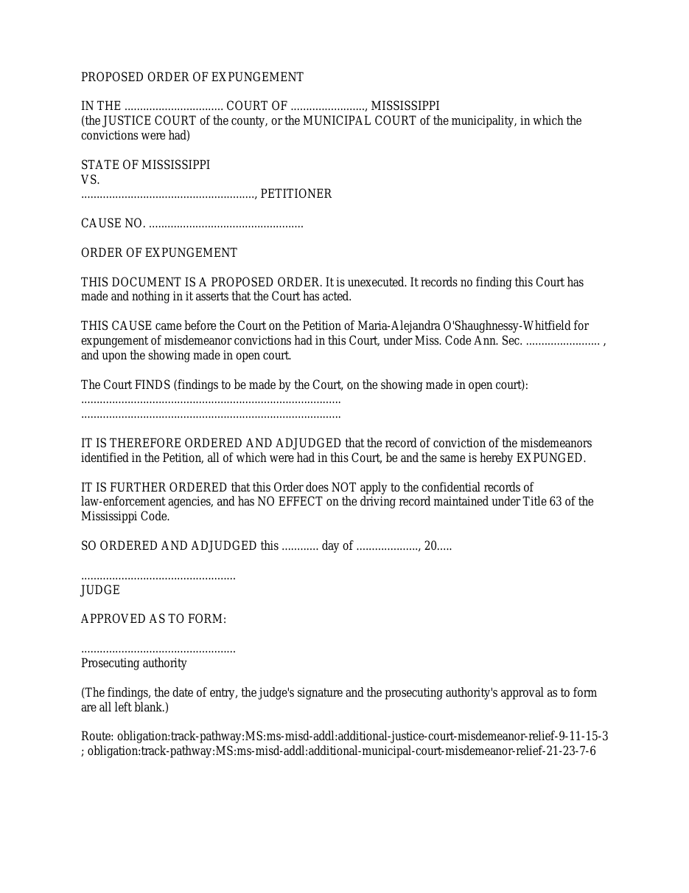
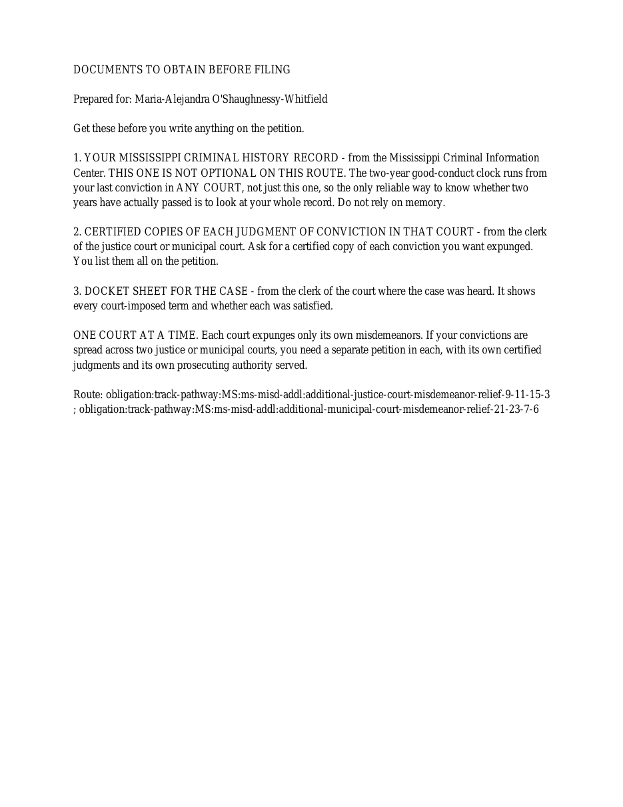
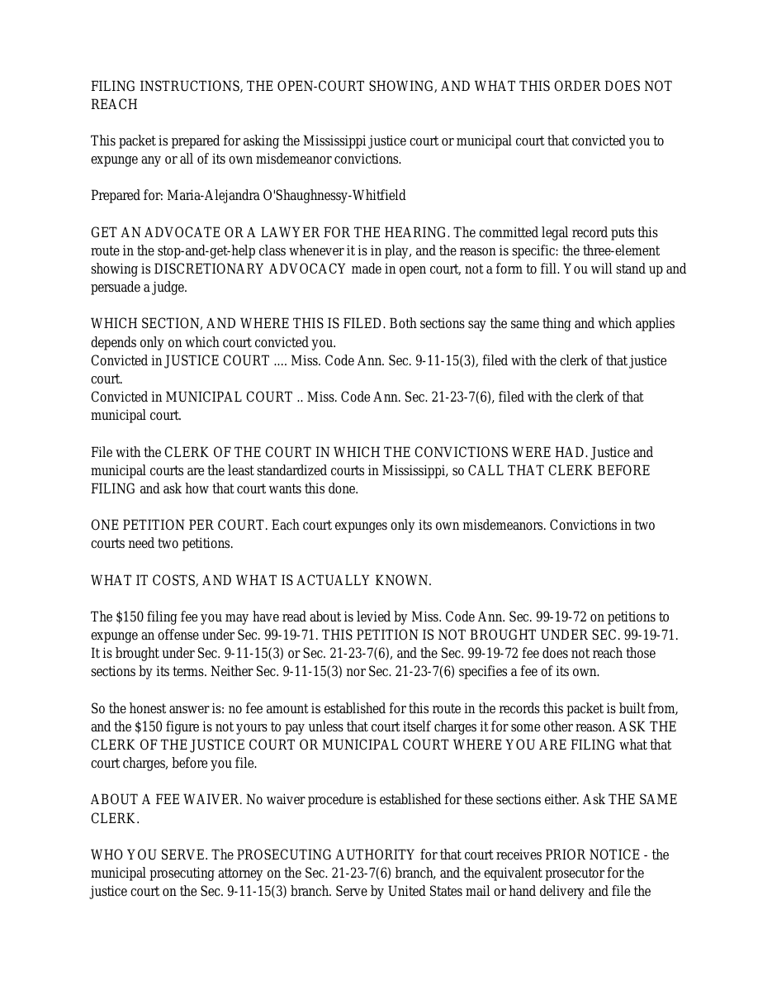

{kind=link}

NEW PAIR — OWNER APPROVAL PENDING. Prior pair rejected. No inherited approval, runtime promotion, publication or Production authorization.
Only the proposed order uses 13pt leading instead of 14.5pt, with the same 11pt font and one-inch margins. All wording is preserved. The explanation is immediately below the prosecuting-authority signature block on page 3. Each packet is now seven pages.
Open repaired PDF
SHA-256: c2938658151e650ff20791a8b14ba4a9197a339ced3645407914a2066bafbb7b







--- rejected/canonical +++ repaired/canonical @@ -121,7 +121,7 @@ .................................................. Prosecuting authority - + (The findings, the date of entry, the judge's signature and the prosecuting authority's approval as to form are all left blank.)
Open repaired PDF
SHA-256: 61c429c2135a6b3b79de26adea8eb6f6ed1288aaf21c0a604dd656c431848c84







--- rejected/boundary +++ repaired/boundary @@ -124,7 +124,7 @@ .................................................. Prosecuting authority - + (The findings, the date of entry, the judge's signature and the prosecuting authority's approval as to form are all left blank.)
{kind=link}